PACE-LM：面向云事件根因分析、基于 GPT-4 提示与增强的校准置信度估计
LLM 在云事件根因分析（RCA）中正确率有限（GPT-4 仅 43.4%）且幻觉伪装性强，on-call 工程师难以判断何时该采信模型给出的根因。论文提出 LM-PACE 框架：在黑盒假设下（无法访问 logits/权重，微调与 temperature scaling 均不可用），用检索增强的 GPT-4 作为独立置信度估计器——先做 COE 预检，让模型自评基于检索到的历史事件是否有足够证据下判断；再做 RCE 评分，从 truthfulness、groundedness、informativeness 维度评估候选根因；最后以 ECE 为目标把两个分数优化映射为最终置信度。在 12 万+ 真实云事件上，方法对 GPT-4、GPT-3.5-Turbo、Text-DaVinci-003 等不同生成器均产出良好校准的置信度；消融显示去掉 COE 或历史上下文会显著恶化校准；人工评估中 80%-100% 置信区间的预测有 86% 被判定与真实根因高度相似。对团队而言，这是'用提示+RAG 让 LLM 自评输出可信度'的代表性工作，同时命中上下文组织、提示设计与可靠性评测三个能力域。
LLM 根因预测器在云事件 RCA 中准确率低且幻觉难以辨别，错误建议会误导 on-call 工程师、浪费诊断时间；同时 GPT-3.5-Turbo/GPT-4 不公开权重、logits 与概率，微调和 temperature scaling 等传统校准方法不可用，且开放式问答的输出空间无约束、缺乏直接监督信号，置信校准比分类任务更难。论文目标是为每个模型生成的根因预测产出校准的置信度分数，帮助工程师决定是否采纳，且估计器需与根因生成器解耦、可跨模型泛化。
提出 LM-PACE：将根因生成器视为黑盒（只假设能拿到其生成的文本），用检索增强的 GPT-4（8K）作为独立置信度估计器，分两阶段打分。①检索：用 dense retriever 按语义相似度在 3896 token 预算内检索历史事件及其真实根因（平均约 15 条）；②COE（Confidence-of-Evaluation）预检：让模型先基于历史事件与当前事件描述生成文本分析（类 CoT，采样 k1 份），再对'是否有足够证据判断根因'回答 Yes/No（每份分析采样 k2 次），取经验均值得到 COE 分数；③RCE（Root Cause Evaluation）评分：基于同一批历史参照，按 truthfulness、groundedness、informativeness 等维度先分析后按量表打分并聚合；④优化步骤：以 ECE 为目标（权重函数可按场景调整），把 COE 与 RCE 分数组合映射为最终校准置信度。'先分析后打分'的提示设计与多次采样聚合是关键手段。
根因预测正确率：GPT-4 为 43.4%，GPT-3.x 系列约为 30% 或更低（Table 1），说明必须辅助工程师判断何时采信
消融实验（Table 2）：全方法在所有设置下 ECE 均最优；仅用 RCE 分数时置信度严重失准，去掉历史上下文或去掉先验分析均导致校准变差
人工评估：全方法对 GPT-4（8K 上下文）给出的 80%-100% 置信区间内的根因，86% 被人工标注为与真实根因高度相似（5 分制评 4 或 5，最少 3 人共识标注）
泛化性：对 GPT-4、GPT-3.5-Turbo、Text-DaVinci-003 三种生成器，以及 3-shot/3896/8K token 不同检索上下文配置，reliability diagrams 均显示校准良好
数据规模：共 121,308 条真实云事件（98,308 作检索集、2,000 验证、3,000 测试）；3896 token 检索预算下平均检索约 15 条历史事件；正确性伪标签由 GPT-4 生成（1-3 分、每查询 512 次采样取均值、阈值 ≥2.3 按人工标注校准 F1）
与需要模型内部表示或微调的校准方法不同（如训练独立校准器需模型表示、verbalized confidence 需微调、Zhao et al. 的方法只适用于有限输出空间的分类任务），LM-PACE 在纯黑盒、纯 prompting 设定下处理开放式问答的置信校准。核心新意在两阶段分解：先由估计器自评证据充分性（COE）以对冲'分数幻觉'（score hallucination），再基于检索历史对预测做多维打分（RCE），最后用 ECE 目标优化两分数到置信度的映射。论文自述是首个面向领域特定开放式问答、用提示式检索增强 LLM 做置信校准的尝试（pioneering effort）。
相关度级别：high
命中能力域：3.1 上下文工程与记忆 | 3.2 提示工程 | 3.5 评测与可靠使用
理由：直接命中三个核心能力域：3.1（RAG/检索增强与上下文预算管理：dense retrieval 检索历史事件、在 3896 token 预算内动态决定检索条数）；3.2（提示技术：先文本分析后打分的 CoT 式中间推理、多次采样聚合、Yes/No 与量表打分等提示模式）；3.5（评测与可靠使用：ECE/reliability diagram/人工评估构成的校准评测体系，以及'on-call 工程师何时信任 AI 输出'的人机协作工作流）。团队构建知识库问答、代码审查等 AI 辅助工具时面临同样的核心问题——LLM 输出对错难辨、用户不知道何时该信；该文给出了不依赖模型内部信号、与上游生成器解耦的可迁移置信校准方案，是 3.5 域'可靠使用'的直接参考。
建议动作：深入精读并做内部分享
arXiv:2309.05833v3 [cs.CL] 2023年9月29日
PACE-LM：在云事件根因分析中利用 GPT-4 进行校准置信度估计的提示与增强方法
SHIZHUO DYLAN ZHANG，伊利诺伊大学厄巴纳-香槟分校，美国
XUCHAO ZHANG，微软，美国 CHETAN BANSAL，微软，美国 PEDRO LAS-CASAS，微软，美国 RODRIGO FONSECA，微软，美国
SARAVAN RAJMOHAN，微软，美国
主要云服务商已采用大型语言模型（LLM）等先进的人工智能（AI）解决方案来辅助人类识别云事件的根因。尽管 AI 驱动的助手在根因分析过程中的应用日益普遍，但由于任务本身的内在难度、基于 LLM 的方法易于产生幻觉的倾向，以及难以辨别这些伪装良好的幻觉，其准确率低下，从而限制了其在辅助值班工程师方面的有效性。为应对这一挑战，我们提出对预测结果进行置信度估计，以帮助值班工程师决定是否采纳模型预测。考虑到许多基于 LLM 的根因预测器具有黑盒特性，基于微调或温度缩放的方法并不适用。因此，我们设计了一种创新的置信度估计框架，该框架基于对检索增强 LLM 进行提示，仅需从根因预测器获取极少量的信息。该方法由两个评分阶段组成：基于 LLM 的置信度估计器首先评估自己在面对当前事件时做出判断的置信度，以反映其在参考数据中的“扎根程度”（grounded-ness）水平；然后基于历史参考资料对根因预测进行评分。随后，一个优化步骤将这两个分数组合起来，得出最终的置信度赋值。我们表明，我们的方法能够为预测出的根因产生经过校准的置信度估计，并验证了所检索历史数据的有用性和提示策略的有效性，以及在不同根因预测模型之间的泛化能力。我们的研究朝着将 LLM 可靠且有效地嵌入云事件管理系统迈出了重要一步。
Shizhuo Dylan Zhang、Xuchao Zhang、Chetan Bansal、Pedro Las-Casas、Rodrigo Fonseca 和 Saravan Rajmohan。2023。PACE-LM：在云事件根因分析中利用 GPT-4 进行校准置信度估计的提示与增强。1, 1（2023年10月），21页。
在过去十年中，IT 行业逐步采用云平台作为部署应用程序和服务的首选方式。在这些规模庞大的云服务中，诸如意外中断或性能下降等事件会严重损害客户满意度，导致收入损失和客户信任度下降。根因分析（RCA）作为事件诊断过程中的一项关键任务，旨在揭示问题的根本原因并实施纠正措施，以防止问题再次发生。识别事件的根因对于减少服务停机时间、减轻对客户的影响以及最大限度减少人工投入至关重要。
作者地址：Shizhuo Dylan Zhang, shizhuo2@illinois.edu，伊利诺伊大学厄巴纳-香槟分校，美国伊利诺伊州香槟市；Xuchao Zhang, xuchaozhang@microsoft.com，微软公司，美国华盛顿州雷德蒙德；Chetan Bansal, chetanb@microsoft.com，微软公司，美国华盛顿州雷德蒙德；Pedro Las-Casas, pedrobr@microsoft.com，微软公司，美国华盛顿州雷德蒙德；Rodrigo Fonseca, Fonseca.Rodrigo@microsoft.com，微软公司，美国华盛顿州雷德蒙德；Saravan Rajmohan, saravan.rajmohan@microsoft.com，微软公司，美国华盛顿州雷德蒙德。
2023. XXXX-XXXX/2023/10-ART $15.00
Shizhuo Dylan Zhang、Xuchao Zhang、Chetan Bansal、Pedro Las-Casas、Rodrigo Fonseca 和 Saravan Rajmohan
近来，大语言模型（LLM）已在包括根因分析在内的事件诊断任务中展现出其卓越能力。它们在从历史数据和各类来源收集信息方面发挥着关键作用，能够在处理复杂的云事件时为值班工程师（OCE）提供宝贵的建议。尽管 LLM 在许多情况下能够给出令人满意的结果，但它们仍会产生大量不正确的建议。这些不准确之处可能误导 OCE 做出错误决策，导致其诊断工作付诸东流。如图 1 所示的示例所示，在某些情况下，LLM 能够提供宝贵的洞见，从而减少对详尽报告分析、深入调查过往事件或数据收集的需求。然而，在其他情况下，它们可能显得含糊不清、缺乏细节，甚至具有误导性。此外，基于 LLM 的方法容易产生幻觉。令人担忧的是，识别这些幻觉可能是一项艰巨的任务，使工程师难以判断其真实性。这些问题严重阻碍了 AI 工具融入云事件管理流程，因为错误的预测可能将工程师引入歧途，造成大量时间浪费，并可能给服务提供商及其用户带来严重后果。
为了弥合 AI 辅助根因分析（RCA）在实际应用中的差距，我们提出了一种解决方案，用于估计与每个预测根因相关联的置信水平。通过建立可靠的置信度估计机制，值班工程师能够做出更明智的决策。这进而提高了事件解决的效率和有效性，同时降低了因模型给出不准确的根因建议而导致延误所产生的成本。此外，防止采纳错误的建议不仅能通过最大限度地减少中断来改善用户体验，还能减少纠正此类问题所需的值班工作量。通过更深入地理解基于 AI 的模型输出的可靠性，组织可以放心地将这些工具集成到其运维工作流中，从而确保在云环境中无缝且可靠地交付服务。
然而，为根因分析开发校准流程本身就颇具挑战性，其中涉及一系列使该过程复杂化的因素。首先，根因预测器可能随时间和服务而变化。我们的解决方案需要足够通用，并与底层模型解耦。其次，对模型的访问可能受到限制。例如，GPT-3.5-Turbo 和 GPT-4 模型的 logits 和概率并未公开，这使得难以应用基于微调的方法或诸如温度缩放（temperature scaling）之类的传统后验（post-hoc）[16] 方法来直接从根因预测器获得置信度分数。此外，问题的开放性本质进一步增加了挑战。与多项选择或分类等类别型任务相比，开放式问答任务的校准在本质上更为复杂，原因在于其输出空间不受约束，且难以定义直接的监督信号。本文旨在为解决特定领域应用中置信度校准这一关键挑战取得进展，并聚焦于云事件的根因分析。校准问题涉及评估由 AI 赋能的云事件根因分析系统所生成输出的合理性与可靠性，这既需要理解事件及所预测的根因，又需要对预测进行批判性分析。为此，我们采用基于大语言模型（LLM）的解决方案来执行置信度估计。
然而，值得强调的是，大语言模型（LLM）主要在来自互联网的通用领域语料库上进行训练，而对云事件及其根因的处理则需要领域知识。事件描述与其根因之间不存在表面层面的联系，因此模型仅利用其通用领域知识和常识性逻辑推理能力，无法推断出关于根因在多大程度上有效的结论。为了弥合这一差距并提升置信度估计器在这一特定领域应用中的性能，我们试图通过纳入历史事件及相应的根因作为参考数据，来丰富 LLM 在该应用中的领域专业知识，从而使模型能够进行更可靠、更有依据的置信度估计。
PACE-LM：在云事件根因分析中利用 GPT-4 进行校准置信度估计的提示与增强 3
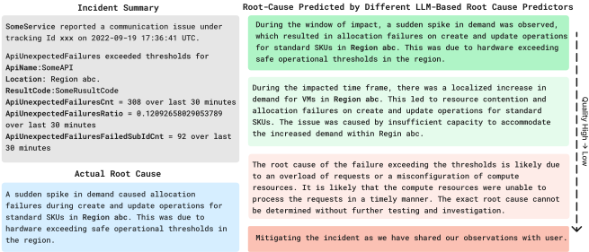
为此，我们提出了一种新的置信度估计框架。我们的方法使用检索增强的大语言模型（LLM）为模型生成的根因生成校准的置信度分数，该方法被命名为 LM-PACE（P rompting and A ugmentation for C onfidence E stimation with L anguage M odels）。我们提出的方法分为两个阶段展开。首先，为了获得对置信度估计器在审视预测根因时所具不确定性的认识，我们提示置信度估计器 LLM 衡量从历史参考中提取的证据强度，以评估当前事件。然后，我们提示模型基于这些参考来评估由根因预测器生成的候选根因。最后，我们执行一个优化步骤，结合这两个分数来找到最合适的置信度赋值。通过实验评估，我们证明模型能够基于证据及其自身分析以语言表述其置信度，而这种表述可以被有效地转换为校准良好的分数。我们将在后续章节中回答以下研究问题：
RQ1：我们能否准确地估计大语言模型所生成根因建议的置信度？
RQ2：鉴于领域专业知识在云事件根因分析中的重要性，历史记录能否改善置信度估计的校准？
RQ3：模型能否利用其自身分析来生成校准更为准确的分数？
RQ4：我们提出的方法能否泛化到涵盖不同的根因分析模型？
通过本研究，我们力求缩小基于大语言模型（LLM）的云事件根因预测器在应用方面的差距，此类预测器不仅提供预测结果，还提供校准良好的置信度估计，从而辅助人类工程师。我们的方法对底层根因预测器所做的假设极少。我们设想，只要各类 AI 辅助的 IT 运维场景具有相似的任务配置和数据可用性，我们的通用框架便可适用于这些场景。
Shizhuo Dylan Zhang、Xuchao Zhang、Chetan Bansal、Pedro Las-Casas、Rodrigo Fonseca 和 Saravan Rajmohan
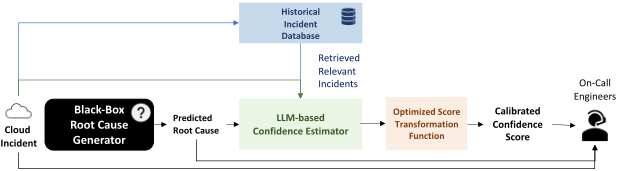
大语言模型（large language models, LLMs）通过在来自互联网的文本语料上进行广泛预训练，已在自然语言处理（NLP）领域的各类任务 [5] 以及该领域之外的任务 [10, 33] 中展现出令人瞩目的能力。近期在这些模型的指令微调（instruction tuning）和基于人类反馈的强化学习（reinforcement learning from human feedback）方面的进展已被证明能够有效提升其遵循复杂指令的能力 [3, 25, 37]。
要将大语言模型适配到特定的下游任务，可以基于该任务的数据对其进行微调（fine-tune，即通过执行梯度更新来修改预训练模型的权重），或者在不更新模型参数的情况下，通过展示示例或以文字方式说明任务来执行上下文学习（in-context learning）。
尽管大语言模型擅长语言理解与文本生成，但其在各类任务中成功回答查询并帮助人类的关键在于知识 [13]。已有多种工作尝试通过为模型配备外部知识来提升大语言模型在不同任务上的表现 [21]。在领域特定任务的背景下，一类尤为值得关注的方法是检索增强（retrieval augmentation），即由检索器模型根据与查询的相关性检索出相关文本片段，并将其作为输入呈现给模型 [12, 27, 29]。大语言模型虽然在训练阶段缺乏这些知识，但能够理解检索到的信息，并将其用于生成回复。
尽管大语言模型已展现出生成看似连贯且符合上下文的回复的先进能力，但已有观察发现它们频繁地“产生幻觉”（hallucinate）[11, 26, 31, 34]，生成偏离原始输入、与先前上下文相矛盾或凭空捏造信息的内容。这些不一致之处被语言模型流畅的输出巧妙地掩盖，十分隐蔽，人类可能难以轻易察觉。当模型缺乏可用于支撑其回答的知识时，这种行为尤为显著。此类情形的一个突出例子便是 AIOps 这类领域特定应用。
云事件管理对云服务提供商而言是一项重大挑战，因为事件可能由代码缺陷、依赖项故障和配置错误等多种问题引发。识别根本原因对于解决事件至关重要。传统上，这项任务由值班工程师负责。他们通过从事件描述中提取关键信息，并参考过往事件和报告来分析事件。
PACE-LM: Prompting and Augmentation for Calibrated Confidence Estimation with GPT-4 in Cloud Incident Root Cause Analysis 5
大语言模型（LLM）的兴起为将基于 AI 的系统引入根本原因识别提供了契机。准确的 AI 预测可以为工程师节省大量时间，使其无需再手动查阅海量文档。然而，如果 AI 预测不正确，则可能导致徒劳无功，甚至造成潜在的服务中断。工程师面临两难境地：盲目信任 AI 可能存在风险，但完全无视模型预测则意味着错失其带来的益处。
| RCA Model | RCA-Strategy | % Correctness |
|---|---|---|
| GPT-4 | Prompting + 8000 Tokens of Most Relevant Historical Incidents | 43.40% |
| GPT-3.5-Turbo | Prompting + 3896 Tokens of Most Relevant Historical Incidents | 22.30% |
| GPT-3.5-Turbo | Prompting + 3 Most Relevant Historical Incidents | 23.70% |
| Text DaVinci-003 | Prompting + 3896 Tokens of Most Relevant Historical Incidents | 30.50% |
| Text DaVinci-003 | Prompting + 3 Most Relevant Historical Incidents | 25.60% |
| RCA Model | RCA-Strategy | % Correctness |
如表 1 所示，鉴于该任务的难度，模型生成的根本原因中有相当可观的比例是正确的（GPT-4 为 43.4%；GPT-3.x 系列约为 30% 或更低），在这些情况下，故障排除时间可以显著缩短；而在其余情况下，轻信模型生成的错误根本原因则可能导致问题解决和服务恢复出现延误。更为复杂的一层因素来自难以辨别的错误预测。图 4 展示了一个事件示例，以及 GPT-4 模型生成的根本原因与值班工程师所诊断出的实际根本原因的对比。二者指向截然不同的问题，若遵循模型预测的根本原因所给出的提示，只会使工程师在缓解该问题的道路上渐行渐远。然而，由于云服务本身的复杂性，工程师无法仅凭自身知识在乍看之下便立即判断其是否正确——因为模型预测通常看起来是正确的。因此，在决定是否采纳模型生成的根本原因时，他们需要获得辅助。由此，开发 AI 辅助根本原因分析系统最关键的步骤之一，在于有效量化针对某一事件的每一条模型生成的根本原因所对应的可信程度。这确保了 AI 技术在云事件管理中的无缝集成，并促进更优的决策制定与事件解决。
置信度校准是指预测能够代表真实正确可能性的概率估计这一问题。形式化地，对于数据集中以 𝑖 为索引的任意一对输入 𝑋 𝑖 与模型预测输出 ˆ 𝑦 𝑖，模型预测的置信度估计 ˜ 𝑃 𝑖 ( ˆ 𝑦 𝑖 | 𝑋 𝑖 ) 应满足
a80 ( 𝑙 𝑖 | ˜ 𝑃 𝑖 = 𝑝 ) = 𝑝, ∀ 𝑝 ∈ [ 0 , 1 ] (1)
其中，我们用 𝑙 𝑖 表示第 𝑖 个数据点被正确预测这一事件。用文字来表述，该等式的含义是“置信度为 ˜ 𝑃 𝑖 = 𝑝 的数据点正确的概率应当为 𝑝”。需要注意的是，与分类任务的经典定义（其中 ˆ 𝑦 𝑖 , 𝑦 𝑖 ∈ 𝑌 为标签空间中的标签类别，且 𝑙 𝑖 = ✶ ( ˆ 𝑦 𝑖 = 𝑦 𝑖 )）相比，我们在此采用的定义已被泛化，以涵盖包括开放式问答在内的不同类型的预测任务。在实践中，我们通常采用基于分箱的策略，即将 0 到 1 的概率区间划分为等宽的桶。为了估计校准后的概率 ( 𝑝 )，我们计算每个桶内与预测概率相对应的实际正结果所占的比例。
6
Shizhuo Dylan Zhang, Xuchao Zhang, Chetan Bansal, Pedro Las-Casas, Rodrigo Fonseca, and Saravan Rajmohan
为了量化校准的结果，一个常用的度量指标是估计校准误差（Estimated Calibration Error, ECE），其定义为
其中，𝑀 为分箱的总数，𝐵 𝑚 为落入第 𝑚 个分箱的样本索引集合，𝑛 为样本总数，acc ( 𝐵 𝑚 ) 为第 𝑚 个分箱的准确率，按第 𝑚 个分箱中正确预测所占的比例计算，conf ( 𝐵 𝑚 ) 为第 𝑚 个分箱的置信度，按第 𝑚 个分箱中预测概率的平均值计算。
由于大语言模型（LLM）在多种场景中与人类用户直接交互，置信度估计这一问题在 LLM 的背景下具有了更为突出的重要性。如第 2.1 节所述，随着 L
然而，开放式问答中的置信度校准本质上比分类、多项选择或抽取式问答中的置信度校准更具挑战性。在这些其他形式中，有限的、预先定义的响应集合使得置信度校准更为容易。然而，开放式任务中无限的可能性使这一过程更加复杂。当存在利用外部信息的潜在可能时，还会出现另一层困难：由于模型只是在聚合信息而并不真正拥有这些信息，若不经过精心设计，模型便无法从本质上评估其响应的准确性。
在本工作中，我们提出通过置信度估计来克服在采用基于大语言模型（LLM）的工具辅助人类方面所面临的困难。我们设计了多种方法，为模型针对云事件预测出的根因生成经过校准的置信度分数，以协助值班工程师决定应在多大程度上信任模型推荐的根因。
对推荐根因进行置信度估计带来了两个需要仔细考虑的关键挑战。第一个方面涉及对兼具高度适应性与广泛适用性的置信度估计方法的需求。鉴于根因预测器的设置——例如用于预测的模型类型、可获取信息的数量等——在不同服务之间各不相同且随时间不断演变，置信度估计技术应当无论当前采用何种根因预测器都能有效发挥作用。这种适应性确保置信度估计在各种模型和服务中都能保持可靠。因此，置信度估计器必须独立于根因预测器运行，这一点至关重要，从而保证其在不同情形下的适应性和准确性。
此外，尽管 GPT-3.5-Turbo 和 GPT-4 等语言模型在各类应用中展现出很高的效率，但一些关键数据——包括模型参数（权重）、输出 token 的概率以及 logits——仍然无法获取。这些要素是置信度校准的基础。权重的不可获取阻碍了通过微调模型来对齐置信度的可能性，而 logits 和概率分数对于实施事后校准（post-hoc calibration）技术则不可或缺。这一限制使可靠的置信度估计流程的开发变得复杂，因而需要一种无需上述信息的方法。
PACE-LM: Prompting and Augmentation for Calibrated Confidence Estimation with GPT-4 in Cloud Incident Root Cause Analysis 7
因此，一个现实的假设是将根因生成器视为黑盒：我们仅假设能够访问其生成的文本 ˆ 𝑟 𝑞𝑢𝑒𝑟𝑦，而对其他任何信息一无所知，包括模型的配置、权重和输出概率/logits、用于产生输出的算法、提示（prompt），以及模型所使用的任何辅助信息。同时，根因生成器的选择可以涵盖任何以开放式文本响应作为其预测根因的模型。这种不受限制的视角考虑到了根因生成模型的多样性和灵活性，能够容纳各种不同的方法。给定事件描述 𝑑 𝑞𝑢𝑒𝑟𝑦 和预测根因 ˆ 𝑟 𝑞𝑢𝑒𝑟𝑦，我们的目标是返回一个置信度估计值 𝜓，用以反映 ˆ 𝑟 𝑞𝑢𝑒𝑟𝑦 是正确根因的置信程度。
为此，我们的目标是开发一个独立的置信度估计器，使其与根因分析流程保持解耦。通过这种方式，我们能够确保置信度估计方法的通用性与适应性，使其可以在不同语言模型之间无缝工作，同时克服某些语言模型访问受限所带来的局限性。为实现这一目标，我们需要回答以下几个研究问题：
如前文所述，在根因生成器作为黑盒运行的情况下，便产生了对一种独立机制的需求，该机制需要融合一个语言模型。此模块的作用在于理解生成器所预测的根因，并生成随后可被转换为置信度分数的输出。一个根本性的问题在于：基于提示（prompting）的方法能否实现良好校准的置信度估计，以及应如何恰当地设计这样一个框架。
根因分析与大语言模型（LLM）的许多其他行业应用场景一样，面临着缺乏领域特定知识这一相同的挑战。具体而言，当要求模型批判性地分析某一事件的根因时，它必然需要借鉴相关知识——而由于其领域特定的性质，这些知识无法从训练中获得。我们从先前关于 LLM 上下文检索增强（in-context retrieval-augmentation）的多项工作中汲取灵感，考察模型能否借助相关的历史事件来产生更准确的置信度估计。
对于大语言模型（LLM）而言，执行评级/评分任务——尤其是在这种开放式的情境下——既非标准做法，也绝非易事。因此，我们探索：为模型提供指引，使其在着手赋分之前先以文本形式开展初步的定性评估，这是否能在这一特定情境中证明是有利的。该方法旨在考察通过引入文本评估这一中间步骤来提升模型性能的潜在效果，从而有望应对在这种无约束环境中进行准确评分所涉及的种种复杂性。
如前文所强调的，一个关键的考量在于确保该方法能够泛化到来自各种根因分析模型的不同根因分布。为解决这一顾虑，我们系统性地评估了所提出方法在由各种模型生成的不同根因集合上的有效性。通过让我们的方法接受这一全面测试，我们旨在确认其在适应根因预测的各种不同特征方面的鲁棒性与通用性。
8
Shizhuo Dylan Zhang, Xuchao Zhang, Chetan Bansal, Pedro Las-Casas, Rodrigo Fonseca, and Saravan Rajmohan
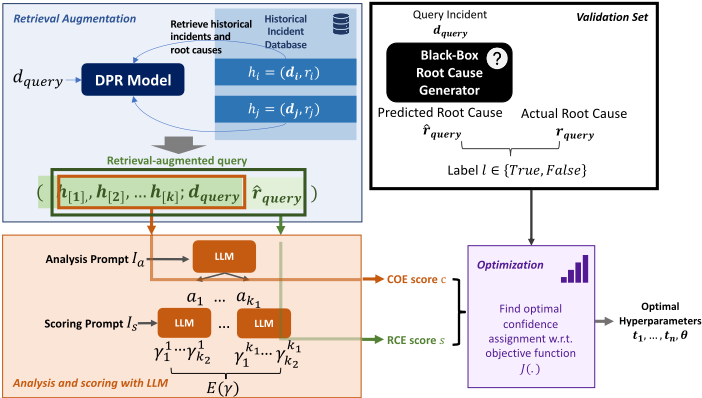
在我们的研究中，我们提出了一种检索增强（retrieval-augmented）的两步流程，旨在对模型生成的云事件根因进行置信度估计，通过提示（prompting）充分发挥大语言模型的能力。所提出的方法包含多个阶段，以确保结果可靠且准确。
为准备检索增强数据，我们检索与每个查询相关的相似历史事件列表。这一检索过程通过采用基于语义相似度的稠密检索器（dense retriever）来完成，使我们能够识别出与当前所处理问题存在潜在关联的过往事件。
在检索到历史事件之后，我们接着提示大语言模型执行评估置信度（confidence-of-evaluation, COE）预检。在此阶段，模型会获得历史事件及其相关根因，以及当前事件的描述。随后，模型被提示思考其自身是否拥有足够的信息来分析当前事件的根本原因。
接下来，我们利用历史事件中的信息执行根因评估（root cause evaluation, RCE）。在这一步中，我们要求语言模型基于检索到的历史事件及其根因，对为当前事件生成的根因进行评估。最后，为获得每个根因的最终置信度分数，我们将 COE 与 RCE 分数结合在一起，并执行一个优化步骤。通过采用这一检索增强流程，我们旨在为云事件根因的置信度估计建立一个稳健的框架。这一创新方法使我们能够有效地利用大语言模型的能力，从而提升我们做出明智决策以及以更高的准确性和置信度排查云相关事件的能力。
PACE-LM: Prompting and Augmentation for Calibrated Confidence Estimation with GPT-4 in Cloud Incident Root Cause Analysis 9
.
SomeService 中所有尝试升级操作系统（OS）的机器均会失败并变得不可达……我们已创建了测试虚拟机（VM），该问题在其中可稳定复现。VM 启动时状态正常，随后在重启后便进入故障状态。
SomeService 中的机器由于与当前机器固件不兼容而遭遇 OS 升级失败。VM 在升级后重启时，过时的固件引发了冲突，导致其不可达。将机器固件升级至最新版本对于确保兼容性以及 OS 升级的成功至关重要。
函数 KiAdjustGroupConfiguration 可能导致未提交的子节点被放入已提交的组中。当前的 KiAllocateProcessorNumber 并未考虑到这一点，从而会对该子节点所在的组进行重新提交，进而为该组中的所有子节点重新分配新的组编号。这会扰乱组数据库，引发同步问题以及启动过程中的潜在错误，尤其是在理想节点分配过程中。
One of the fundamental obstacles in confidence estimation for the root cause analysis task stems from its strongly domain-specific characteristics. Off-the-shelf large language models are primarily designed for general-domain applications and lack the necessary domain-specific knowledge required for a specific service. On the other hand, relevant historical incidents and the expertrecommended root causes can offer crucial insights into the current incidents' root cause.
Therefore, we implemented a retrieval-based pipeline, utilizing a retriever module to search for pertinent historical incidents to enhance the confidence estimator model.
Concretely, we adopted dense retrieval. Given a database 𝐷 = { ℎ 𝑖 = ( 𝑑 𝑖 , 𝑟 𝑖 ) : 𝑖 = 1 , 2 , ....𝑛 𝑚𝑎𝑥 } containing historical incidents ℎ 𝑖 each of which is a pair of historical incident description 𝑑 𝑖 and its ground truth root cause 𝑟 𝑖 , for each query incident 𝑑 𝑞𝑢𝑒𝑟𝑦 , we compute the inner product ⟨ 𝐸𝑛𝑐 ( 𝑑 𝑞𝑢𝑒𝑟𝑦 ; 𝜃 𝑒𝑛𝑐 ) , 𝐸𝑛𝑐 ( 𝑑 𝑖 ; 𝜃 𝑒𝑛𝑐 )⟩ for each 𝑑 𝑖 ∈ 𝐷 , where we first compute the embeddings of the descriptions of query instances and instances in the retrieval database 𝐷 using the same encoder LM 𝐸𝑛𝑐 parametrized by 𝜃 𝑒𝑛𝑐 and then obtain their similarity score by calculating the inner product of their encoded vectors.
Then, for each 𝑑 𝑞𝑢𝑒𝑟𝑦 , we retrieve a sorted list of most relevant historical incidents from the database based on the similarity scores up to a fixed token budget 𝐿 to form the retrieved reference 𝐻 for the query, that is, we retrieve the 𝑘 most relevant examples where 𝑘 = 𝑚𝑎𝑥 ( 𝑘 ′ ) 𝑠.𝑡 . len ([ ℎ [ 1 ] , ..., ℎ [ 𝑘 ′ ] ]) ≤ 𝐿 where ℎ [ 𝑗 ] is the 𝑗 -th highest ranked incident with respect to 𝑑 𝑞𝑢𝑒𝑟𝑦 and len ( . ) returns the total number of tokens in a list of data instances. Note that for clarity of notations, we omitted the superscripts indexing the query incident in this subsection.
10
Shizhuo Dylan Zhang, Xuchao Zhang, Chetan Bansal, Pedro Las-Casas, Rodrigo Fonseca, and Saravan Rajmohan
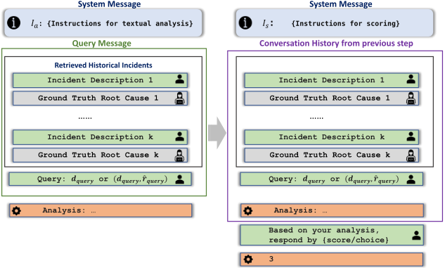
给定通过两步置信度估计为每个数据点得到的 COE 和 RCE 分数，剩下的问题便是寻找一种从这些中间分数到置信度的最优映射。
考虑这样一个问题：我们假设有 𝑚 个置信度等级类别，将区间 [ 0 , 1 ] 均匀划分，并且希望为每个根因分配最能指示其置信度等级的最合适类别。令 𝜋 ( ., . ) 表示分数变换函数，其接收 COE 和 RCE 分数并将它们映射为 0 到 1 之间的一个值；令 𝜔 ( . ) 为权重函数，用于确定每个类别的相对重要性；令 ✶ [ 𝑙 𝑗 ] 表示所生成的根因 𝑗 正确这一事件；并令 𝑡 0 , . . . , 𝑡 𝑚 为每个类别的阈值，其中 𝑡 0 = 0 和 𝑡 𝑚 = 1 分别是 𝜋 ( ., . ) 可能输出的最小分数和最大分数。
12
Shizhuo Dylan Zhang, Xuchao Zhang, Chetan Bansal, Pedro Las-Casas, Rodrigo Fonseca, and Saravan Rajmohan
一般而言，优化目标具有如下形式
✶ 参数 𝜔 在调整分配给每个置信度桶的相对重要性方面起着关键作用。例如，在强调高置信度案例是首要任务的情形下，我们可以灵活地为相应的桶分配更大的权重。当 𝜔 ( 𝑖 ) = 𝑗 ✶ [ 𝑡 𝑖 ≤ 𝜋 ( 𝑐 𝑗 , 𝑠 𝑗 ) ≤ 𝑡 𝑖 + 1 ] 时，该目标即退化为期望校准误差（Expected Calibration Error, ECE）分数。在我们的实验中，我们采用 ECE 目标，而每个桶的加权机制可以针对不同场景进行定制。
5.1.1 数据集与标签。在本小节中，我们介绍数据集的准备过程。
我们收集的数据由从 CompanyX 内部不同服务以及不同严重程度级别收集的事件数据组成，总计 121,308 起事件。为了构建该数据集，我们选取 98,308 起事件作为检索集（retrieval set），2,000 起作为验证集，其余 3,000 起作为测试集。我们在验证集上搜索能够优化目标（ECE）的最佳参数组合，随后在测试集上进行评估。
对于每个验证和测试实例，我们将用于检索事件的最大 token 预算 𝐿 设为 3896，并在该预算内检索最相似的历史事件。历史事件的平均数量约为 15。
由于人工标注的成本较高，我们使用 GPT-4 生成伪标签（pseudo-labels），具体做法是将 ( 𝑟 𝑖 , ˆ 𝑟 𝑖 ) 对输入给 GPT-4，并询问其二者是否相似。我们要求模型给出 1 到 3 之间的整数值评分。每次查询采样 128 个分数，每个输入查询 4 次。我们计算 512 个输出的平均分数。我们将正确性阈值定为 ≥ 2.3，该阈值在带有独立人工标注的验证集上可取得最大的 𝐹1 分数。
5.1.2 评估协议。我们通过可靠性图（reliability diagram）、ECE 分数和人工评估来展示该方法的有效性。可靠性图（图 6 和图 12）是评估机器学习模型中概率预测校准情况的重要工具。可靠性图将模型产生的预测概率与其观测频率进行直观比较，从而揭示模型提供良好校准置信水平的能力。它可作为对校准性能的快速评估手段。在可靠性图中，横轴为置信度轴，表示 0 到 1 之间的范围。该区间被均分为更小的子区间。每个子区间内柱形的高度表示：在被赋予的置信分数落在相应子区间内的根因集合中，正标签所占的比例。灰色阴影区域是相应柱形预期应当与之对齐的区间。
此外，我们还给出了期望校准误差（Expected Calibration Error, ECE）分数，该分数是量化机器学习模型所生成概率预测之校准质量的一项关键指标。ECE 衡量在各种置信区间上预测概率与观测频率之间的差异。这一评估为模型的校准精度提供了一个细致的视角，凸显了与理想对齐之间可能存在的偏差。通过对这些差异进行数值量化，ECE 有助于客观评估模型在概率估计方面的可靠性，帮助从业者定位并解决需要改进校准的环节。
PACE-LM: Prompting and Augmentation for Calibrated Confidence Estimation with GPT-4 in Cloud Incident Root Cause Analysis 13
5.1.3 根因生成器。为评估所提出方法在多种不同黑盒模型上的有效性，我们开展了以三个不同的语言模型作为根因生成器的实验，这些模型既包括使用人类反馈微调的模型（GPT-4、GPT-3.5-Turbo），也包括未使用人类反馈微调的模型（Text-DaVinci-003），预期它们在风格、语气和正确性方面会产生不同的输出分布。这些实验在下文所讨论的多种配置下进行。
我们探索了让模型接触不同程度历史信息的做法。标注“- 3-shot”表示基于事件描述的语义相似性、根据三个最相似历史实例生成的根因；而标注“-3896”对应在提示大小满足 3896 个 token 约束的前提下，由可行范围内数量最多的最相似历史事件推导出的根因。我们为根因预测设定了 200 个 token 的上限。“-8K”表示 8000 个 token 的最相似历史事件。
5.1.4 实现细节。在我们的实验中进行置信度估计时，我们使用 OpenAI GPT-4（最大 8K token）作为基础语言模型。这一强大的模型为评估与每个由模型生成的根因相关联的置信水平提供了基础。在生成分析和评分的过程中，我们将温度参数 ( 𝑇 ) 设为 1。温度值使我们能够控制模型输出的随机程度。在置信度估计过程中生成分析时，我们将最大 completion token 数限制为 256。
5.2.1 RQ1: Can we accurately estimate the confidence for the root cause recommendations generated by Large language models? Figures 6b 12a 12b 12c and 12d are reliability diagrams plotted for the confidence estimates by our full method for root causes generated by various models under different conditions. As demonstrated in the reliability diagrams, our proposed approach is able to produce well-calibrated confidence estimates for the root causes generated under different root cause generator set-ups.
To assess the significance of the COE score, we conducted the same optimization procedure solely on the basis of the RCE score (see Figures 12e 12f 12g 12h). Notably, the confidence scores are seriously mis-calibrated when using only RCE scores. In the confidence estimation procedure, the COE score plays an important role in producing a calibrated confidence score since it counters the score hallucination effect in situations where the calibrator model is not well-informed enough to present a fair evaluation of the root cause. In Figure 8, we juxtapose the distributions of RCE scores with calibrated scores for incorrect root causes. The evident disparity between these two score distributions underscores that relying solely on the RCE score is inadequate for generating well-calibrated confidence estimates.
We analyze the distributions of cases in which the model assigns high COE scores, indicating instances where it deems itself equipped with ample evidence to engage in reasoning about the underlying factors. This is contrasted with cases receiving low scores. In situations of low COE scores, the model demonstrates a tendency to overestimate incorrect root causes (see Figure 10b), while undervaluing correct root causes (See Figure9a). This divergence is less pronounced in instances with high COE scores. It implies that the model is indeed more confused when there is less evidence from historical incidents. This observation underscores the vital importance of considering the model's confidence in estimation and integrating such insights into the confidence estimation framework.
Figure 6c shows the reliability diagram if we were to project scores linearly to the interval between 0 and 1 and Figure 6d is the linearly projected RCE score. By comparing Figures 6b and 6c,
14
Shizhuo Dylan Zhang, Xuchao Zhang, Chetan Bansal, Pedro Las-Casas, Rodrigo Fonseca, and Saravan Rajmohan
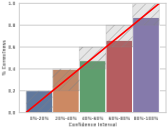
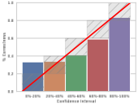
(b) Confidence Estimation
Without COE estimation.
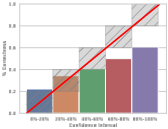
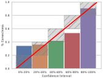
(c) Confidence Estimation
by Uniform Binning Strat-
egy.
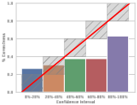
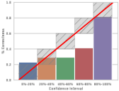
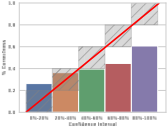
we show that the optimization step for binning is necessary since neither model-produced score is scaled uniformly.
5.2.2 RQ2：鉴于领域专业知识在云事件根因分析中的重要性，历史记录能否改善置信度估计的校准？我们的实证研究提供了令人信服的证据，表明将历史事件纳入 RCE 评分过程能带来显著优势。如果不引入这些额外信息，RCE 流程将失去其根本目的和效力。由于该问题具有高度的领域特定性，它本质上依赖于其原始预训练语料库中不存在的外部信息来源。这与自然语言处理（NLP）领域中涉及常识问答或一般推理的任务形成鲜明对比，在后一类任务中，必要的知识已通过预训练为模型所掌握。
在模型必须在没有历史事件上下文的情况下生成关于根因的分析与判断的场景中，它往往依赖于通用领域知识以及事件描述与潜在根因之间的表面对应关系。这种依赖往往是不充分的，因为模型在缺乏历史上下文或服务特定洞察的情况下，往往无法把握那些对于深入审查预测根因至关重要的细微且依赖上下文的要素以及基础模式。仅凭事件描述并不能完整涵盖根因，从而导致模型的分析缺乏深度和精确性。因此，在缺乏历史事件和服务特定知识的情况下，对根因的准确评估被证明是无法实现的。
相比之下，在提供历史事件的场景中，模型能够分析当前事件与过往事件之间的相似性，从而得以将模型生成的根因与这些历史事件的实际根因进行比较。历史数据的整合不仅增强了它对复杂的、领域特定的
PACE-LM：在云事件根因分析中利用 GPT-4 进行校准置信度估计的提示与增强 15
物理ARM64机器会因心跳丢失或错误更新而偶发故障，需要干预才能恢复。迁移到ARM64虚拟机（VM）有助于减少停机时间并提高资源池的容量。
物理ARM64机器有时会在重启时丢失心跳，或受到错误更新的影响，需要干预才能恢复。如果可能的话，迁移到ARM64虚拟机（VM）可以减少我们花在恢复物理机器上的时间。
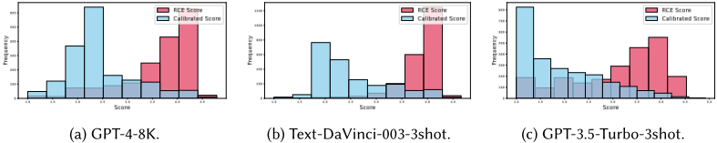
细微差别。通过访问丰富的历史事件数据库，模型能够熟练地识别模式并发现反复出现的问题。在检测到反复出现的问题时，置信度估计器便能够直接验证所识别根因的准确性。
5.2.3 RQ3：模型能否利用自身的分析来生成校准更准确的分数？围绕思维链（chain-of-thought, CoT）推理的新兴证据为增强各种自然语言处理（NLP）推理任务的能力提供了一条富有前景的途径。为了充分利用这一潜力，我们着眼于研究该方法能否无缝地融入评分过程，而评分过程本身固有地具有主观性和开放性的特点。在开展研究之后，我们观察到语言模型确实从其先前的分析中获得了可观的收益，这些分析为其做出更合理、更准确的评分提供了信息充分的依据。
值得注意的是，在COE评分中，直接评分在大多数情况下都会产生较低的分数，因为该问题对于模型直接回答而言绝非易事，因此无论模型实际掌握了多少信息，它都倾向于陷入困惑并偏向于生成低分，如图10所示。对于RCE，零样本（zero-shot）评分在区分正确与错误案例方面往往表现更差（图9），从而产生不理想的置信度估计结果。
实证结果表明，生成分析是我们的方法在该任务中的一个重要组成部分，因为它使模型能够在解答指令中列出的具体问题的同时提供全面的洞察。通过生成分析，语言模型能够更深入地钻研给定的上下文，提取相关信息，并给出精确契合当前任务的结构良好的回答。通过这一过程，模型能够识别
16
Shizhuo Dylan Zhang, Xuchao Zhang, Chetan Bansal, Pedro Las-Casas, Rodrigo Fonseca, and Saravan Rajmohan
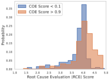
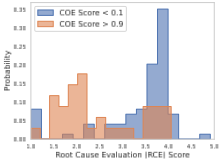
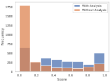
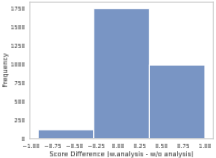
在检索到的上下文中对做出明智判断具有特殊重要意义的关键示例。通过突出这些至关重要的示例，模型增强了为RCE步骤优先处理相关信息的能力，最终带来更准确的回答。
| Root Cause Generator | LM-PACE | RCE-Only With Optimization | COE and RCE Uniform Binning | RCE-Only Uniform Binning |
|---|---|---|---|---|
| GPT-4-8K | 0.082 | 0.157 (+0.075) | 0.118 (+0.036) | 0.261 (+0.179) |
| GPT-3.5-Turbo-3shot | 0.084 | 0.192 (+0.108) | 0.121 (+0.037) | 0.327 (+0.243) |
| Text-DaVinci-003-3shot | 0.081 | 0.219 (+0.138) | 0.132 (+0.051) | 0.459 (+0.378) |
| GPT-3.5-Turbo-3896 | 0.053 | 0.156 (+0.103) | 0.112 (+0.059) | 0.355 (+0.302) |
| Text-DaVinci-003-3896 | 0.072 | 0.189 (+0.117) | 0.176 (+0.104) | 0.395 (+0.323) |
| Root Cause Generator | LM-PACE | RCE-Only With Optimization | COE and RCE Uniform Binning | RCE-Only Uniform Binning |
5.2.4 RQ4: Can our proposed approach generalize to encompass different root cause analysis models? Here we examine whether the proposed method can indeed work for root causes generated by different upstream root cause generators with various amounts of retrieved information, which implies varying accuracies for upstream root cause analysis results as well as the distributions of the underlying text. By conducting experiments using the underlying causes produced by retrieval-
PACE-LM: Prompting and Augmentation for Calibrated Confidence Estimation with GPT-4 in Cloud Incident Root Cause Analysis 17
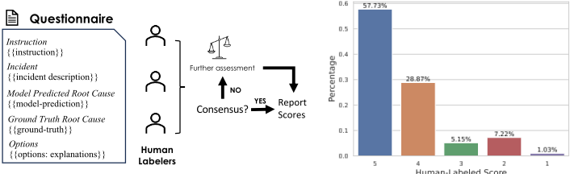
Human-Labeled Score
augmented Text-DaVinci-003 applied to the three most pertinent incidents (depicted in Figure 12a), along with GPT-3.5-Turbo's responses to the top three relevant incidents (illustrated in Figure 12b), as well as in scenarios with maximum context length (as presented in Figure 12c), we demonstrate the persistent effectiveness of the proposed approach. This applicability holds true across diverse output distributions from models both fine-tuned with human feedback (such as GPT-3.5-Turbo and GPT-4) and those that are not (like Text-DaVinci-003), as well as when exposed to varying amounts of information.
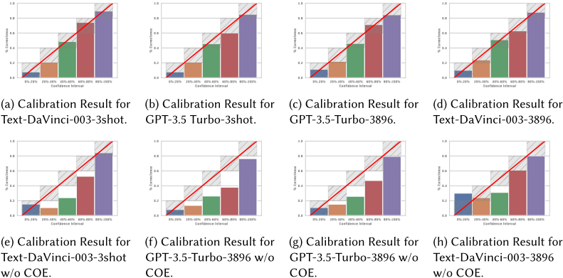
18 Shizhuo Dylan Zhang, Xuchao Zhang, Chetan Bansal, Pedro Las-Casas, Rodrigo Fonseca, and Saravan Rajmohan
人工评估的设置是将模型生成的根因与真实根因（ground truth）进行对比，以评估其质量。该评估过程由人工评估者执行，他们的任务是根据预先定义的量表为每个模型生成的根因分配一个相似性评分。其目标是确定模型输出与实际根因的吻合程度。我们向人工标注者提供 5 个选项（包括评分及对应的等级）：
1（完全无关）；2（模糊或关联较远）；3（存在相似之处）；4（明显相似）；5（非常相似且高度相关）。
我们采用共识标注（consensus labeling）方法，即当在最少所需数量的标注者之间达成共识时，该条目即获得一个标签。若未能达成共识，则该条目将由更多标注者进行进一步评估。在我们的情形中，最少所需标注者数量为 3。
在真实的云事件故障排查场景中，最关键的实例是那些模型为预测根因赋予高置信度评分的实例。在这种情况下，值班工程师（on-call engineers）更倾向于信任这些预测，一旦估计被证明不准确，将导致严重后果。
因此，我们对完整方法（full method）中落入 80% - 100% 区间的 GPT-4 8K token 生成的根因进行了标注，标签分布如图 11b 所示。我们注意到，86% 的案例（评分为 5 和 4）被人工标注为与真实根因高度相似，这落在 80% - 100% 的范围内。人工评估结果进一步证明，该校准方法确实有效，因为它能够产生与人类判断一致的结果。
应用于 IT 运维的机器学习通常被称为 MLOps 或 AIOps，其在云事件管理背景下的研究已持续了一段时间。近十年来，多项研究强调了它在管理和解决云服务事件方面的有效性[2, 4, 6, 7, 15, 20, 23]。该领域的发展历程中涌现出了众多方法；从利用时间序列和基于特征的技术的方法，到采用先进生成式语言模型的方法。其根本动机始终是充分利用海量可用数据的力量，构思有效的机器学习解决方案，从而增强人类能力并提升整体生产力。
近来，我们见证了范式的转变，尤其是在语言模型的能力方面。这些模型不仅不断演进，还在处理特定领域的问答任务方面展现出了娴熟的能力 [29]。这些进步的影响是深远的。它们开辟了潜在的路径，使这些模型能够被无缝地集成到产品的生命周期中。一个典型的例子是根因分析（RCA）流程，[1, 8, 17] 等一系列工作也对其进行了研究。然而，一个普遍的问题是，众所周知语言模型擅长产生幻觉 [14, 32]，这会生成看似合理却包含高度误导性信息的输出，可能使那些将模型输出作为参考的利益相关者感到困惑。
针对预训练语言模型的置信度校准已在多种问答设置下得到研究。他们探索了多种方法来校准用于问答（QA）任务的预训练语言模型。Mielke 等人 [22] 提出训练一个单独的置信度校准器，但其方法需要来自模型的表示。Lin 等人 [19] 提出使用模型以语言形式表述的置信度作为置信度估计，但这需要对用于生成答案的模型进行微调以执行该功能，而这并不总是可行的。
PACE-LM: Prompting and Augmentation for Calibrated Confidence Estimation with GPT-4 in Cloud Incident Root Cause Analysis 19
在上下文学习（in-context learning）设置下进行置信度估计更具挑战性，因为在我们所能操纵的组件方面受到更多限制。Zhou 等人 [36] 指出，通过提示引导模型以语言形式表达其不确定性可能会损害模型的性能。Zhao 等人 [35] 提出了一种专为分类任务量身定制的校准框架，该框架要求输出空间有限并需要手工构建的监督函数，因此无法应用于开放式问答问题。在分类设置之外，近期的工作 [28, 30] 探索了针对事实型和数值型 QA 任务的基于提示的置信度估计。Xiong 等人 [30] 指出，他们的置信度估计方法在更复杂的任务中表现不佳，尤其是那些需要领域特定知识的任务。特别地，Jiang 等人 [16] 证明了用检索到的知识增强输入可以有益于问答中的置信度估计。然而，他们的研究是在多选题或抽取式 QA 任务上开展的，这两者本质上都是分类问题，无需生成开放式回答。
鉴于我们对快速发展的智能运维（AIOps）应用所面临挑战的探索，尤其是针对基于云的平台，本文指出了采用基于大语言模型（LLM）的根因预测器所涉及的主要障碍。这些障碍包括可能产生错误建议以及难以察觉的幻觉，这些问题可能会误导值班工程师并造成重大损失。为缓解这些挑战，我们提出对每个预测执行置信度估计。我们开发了一个对根因预测器做出最少假设的通用框架 LM-PACE，其设计具有足够的灵活性，可涵盖各类根因预测器。我们的方法将置信度估计过程分解为两个阶段：首先衡量历史参考所提供证据的强度，然后量化模型预测的质量。我们通过一个优化步骤从这两个分数中获得最终的置信度赋值。我们已在多种不同的输出分布上证明了本方法的适应性和有效性。值得注意的是，这项研究是在领域特定场景下，通过提示检索增强的大语言模型对开放式问答任务进行置信度校准的开创性工作。更广泛地说，这项工作也作为证据，证明了 LLM 能够被提示以生成校准的置信度估计。它还表明了 LLM 有潜力被用于各种其他领域特定任务中的置信度估计，从而促进构建更可靠的 AIOps 系统。